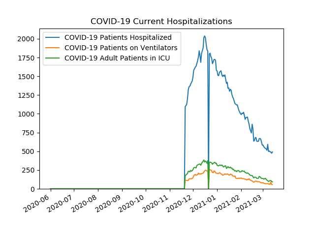
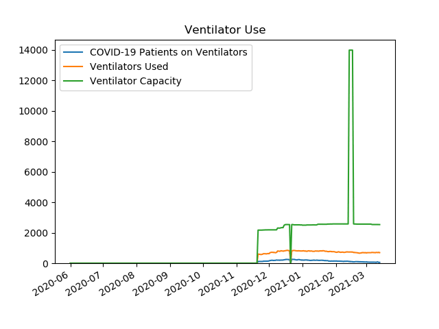
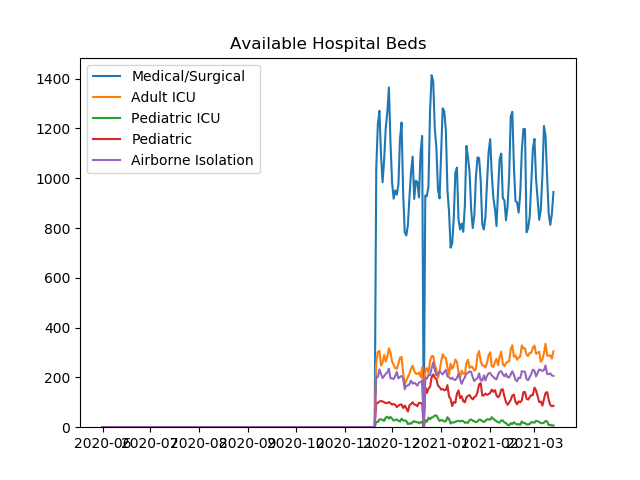
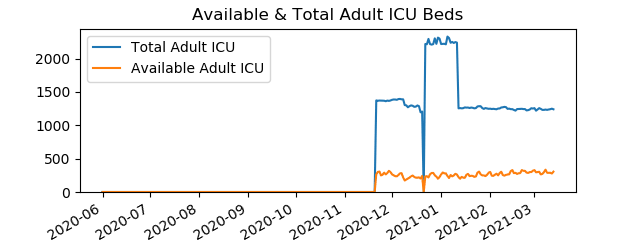
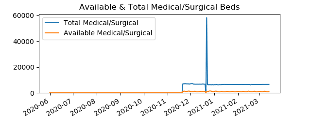
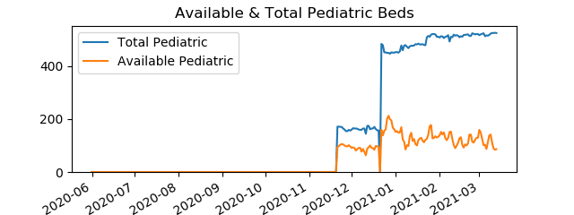
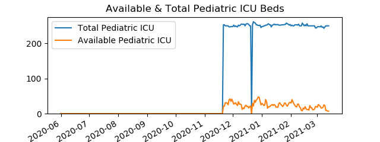

Active COVID-19 Hospitalizations in Southeast HCC
Data is from
PA Dept Of Health
COVID-19 Current Hospitalizations
Date
COVID-19 Patients Hospitalized
COVID-19 Patients on Ventilators
COVID-19 Adult Patients in ICU
20201121
1096
115
170
20201201
1493
149
256
20210101
1570
208
312
20210201
990
145
229
20210205
977
133
235

Ventilator Use
Date
COVID-19 Patients on Ventilators
Ventilators Used
Ventilator Capacity
20201121
115
606
2172
20201201
149
624
2189
20210101
208
807
2498
20210201
145
718
2579
20210205
133
715
2579

Available Hospital Beds
Date
Medical/Surgical
Pediatric ICU
Adult ICU
Pediatric
Airborne Isolation
20201121
1039
21
265
94
202
20201201
984
34
264
91
197
20210101
1095
29
264
151
218
20210201
1157
30
301
138
218
20210205
808
24
274
128
192

Available & Total Adult ICU Beds
Date
Available Adult ICU Beds
Total Adult ICU Beds
20201121
265
1373
20201201
264
1382
20210101
264
2218
20210201
301
1249
20210205
274
1240

Available & Total Airborne Isolation Beds
Date
Available Airborne Isolation Beds
Total Airborne Isolation Beds
20201121
202
863
20201201
197
876
20210101
218
940
20210201
218
965
20210205
192
955
Available & Total Medical/Surgical Beds
Date
Available Medical/Surgical Beds
Total Medical/Surgical Beds
20201121
1039
6973
20201201
984
6979
20210101
1095
6293
20210201
1157
6357
20210205
808
6413

Available & Total Pediatric Beds
Date
Available Pediatric Beds
Total Pediatric Beds
20201121
94
171
20201201
91
160
20210101
151
452
20210201
138
507
20210205
128
510

Available & Total Pediatric ICU Beds
Date
Available Pediatric ICU Beds
Total Pediatric ICU Beds
20201121
21
253
20201201
34
248
20210101
29
248
20210201
30
250
20210205
24
253
